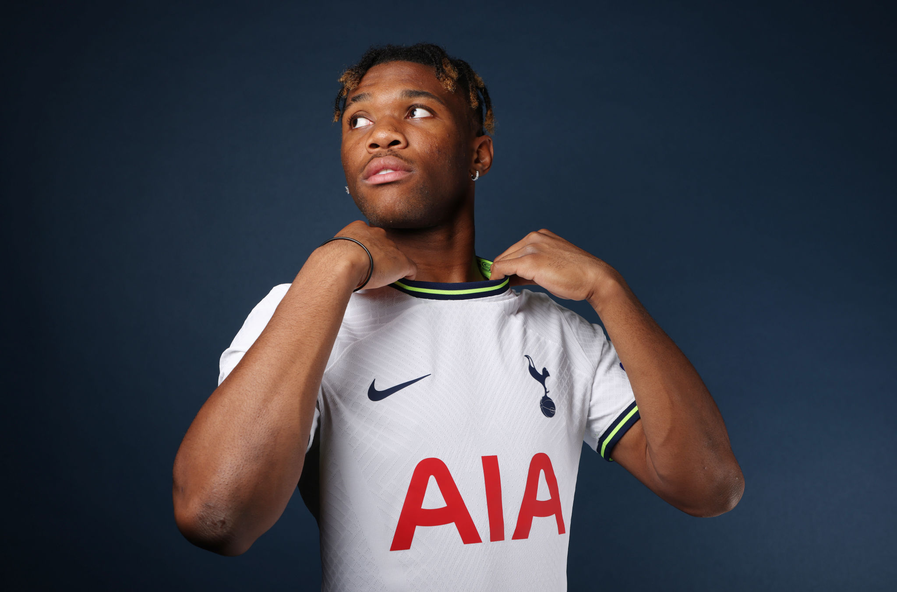

(Photo by Tottenham Hotspur FC/Tottenham Hotspur FC via Getty Images)
After a busy summer Tottenham has gone through bringing in the likes of Ivan Perisic, Yves Bissouma, and Richarlison to N17,
they haven't shown signs of slowing down, bringing in Destiny Udogie from Udinese for a reported 15m with a loan back to the
Serie A side for the 2022-23 campaign.
But who is this 19-year-old left back and what does he bring to Tottenham?
Brief History
Born in 2002 in Verona Italy, Udogie was brought up through the youth ranks of Hellas Verona where he made his professional Serie A debut
for the Italian topflight side in a 2-2 draw against Milan in November of 2020.
Less than a year after his first professional game, Udinese snapped him up on a loan with an obligation to buy in 2021 where he went on
to play 37 games for the club in 2021-22 netting 5 times and assisting 3. Throughout his career he's been capped at the youth level
representing the Italian national team from U16 to U21 where he has played since September of 2021.
A Numberical Analysis
Standing at 187cm and weighing 73kg, Udogie is physically built to be a defensively strong player which consequently shows in his underlying performance stats.
Udogie boasts 1.86 tackles won per 2.73 tackles per 90 placing him 91st and 82nd percentile respectively among full backs of the big 5 leagues.
He's also comfortable tackling against dribblers with around 1.16 dribblers tackled per 90 - though only 50% of those dribbles tackled are actually successful.
His numbers show that he's comfortable operating higher up the pitch aiding in the attack and pressing in midfield just as much as in his defensive third
(92nd percentile for pressures in the middle 3rd and 84th percentile for tackles in the middle 3rd). The Italian youth international's lack of touches in
all areas of the pitch except the attacking penalty box is a clear indicator of Udogie's willingness to attack with 2.7 touches per 90 in the attacking penalty
area - top 15% percent.
Despite his relatively physical build, he's very effective going forward to create chances for himself and his teammates. The 19-year-old currently averages
0.18 goals per 90 which is the top 4th percentile of all full backs in the big 5, impressive for any age albeit a 19-year-old in the Italian topflight.
One key area Udogie lacks in his game is his crossing; Conte's reliance on his teams creating crossing opportunities from wide is crucial for his system to
score goals with Emerson and Perisic currently taking care of that role. Udogie's worrying 0.6 crosses per 90 - at the bottom 1% of all fullbacks of the big
5 - will definitely need a lot of improvement before trying to integrate himself into Conte's side as a competitive option.
The Future at Spurs for Udogie?
Once Udogie returns to Tottenham next season after his loan from Udinese, we can expect him to compete with Ryan Sessegnon to be the 2nd pick behind
Perisic for the left wing back position. The regular game time Udogie should be getting at Udinese is going to be hugely important for his development
and to make himself more competitive against Sessegnon and potentially Perisic.
Being only 20 years old when he returns from his loan from Udinese, Udogie has massive potential to fill not only as a potential star player for
Tottenham in the future but even in the short term as a source of competition in one of Conte's most cherished and prioritized position of his tactics.
Whether or not he succeeds or fails at N17 will require time and patience to find out but until then Destiny Udogie is a diamond in the rough and sending
him back on loan to Udinese was definitely a good move by the club to make sure he isn't pushed into the deep end of the Premier League too quickly.